9.4 PHYSIOLOGICAL CONTRAINTS OF THE ORGANISM
We expect two kinds of limits under steady state assumptions: one area where the environmental conditions make the organism too hot and conversely another area where it would be too cold. Furthermore, we expect an inverse relationship between air temperature and absorbed radiation because the organism must maintain an energy balance. The reader should pause here to make sure that these ideas are intuitive, as shown graphically in Figure 9.4. Common experience suggests that increasing the air temperature will make the environment hotter, but increasing the absorbed radiation is not as obvious. Most of us, however, are familiar with the midday heat stress common in many areas on a clear summer day. Later in the afternoon when the sun is lower in the sky \(Q_a\) will be reduced. Air temperature will also be dropping so that the transition that has occurred can be represented by the arrow labeled 2 in Figure 9.4. In the wintertime or early morning the reverse is true; the sun will often feel good because it provides the extra energy to move you into the acceptable region as shown with the first arrow. The exact slope and position of these limits will depend on other environmental conditions such as wind speed and characteristics of the organism such as size and insulation. One can think of the limits as the combination of physiological factors that will allow the organism to exist in that environment. For the lower limit of the energy budget calculation of an endotherm we would assume a high metabolic rate and thick insulation.
If we superimpose Figure 9.4 on Figure 9.1, the intersection or shaded region of Figure 9.5 is the climate space of the organism. It should be clear to the reader that the northwest and southeast boundaries are the results of environmental constraints while the northeast and southwest limits are the result of the organism’s need for homeostasis. The physiological limits can be calculated explicitly using the First Law of Thermodynamics. This is the task of the next section.
Figure 9.4: In Region I the animal is too cold. In Region II the animal can maintain thermal equilibrium. In Region III the animal will become overheated. Arrow 1 indicates the change in environmental conditions that takes place early in the morning. The added warmth of the sun makes the environment more ‘comfortable’. Arrow 2 refers to the change in \(Q_a\) and \(T_a\) in the mid-afternoon on a clear summer day.
Figure 9.5: If we superimpose Figure 1 on Figure 4 the result is the crossin the diagram called the climate space of the organism. The northwest (\(E_1\)) hatched region and southeast (\(E_2\)) boundaries are due to the physical environment. The shouthwest (\(P_1\)) and northeast (\(P_2\)) boundaries are due to the physiological the organism.
We will make a climate space diagram for the survivable body temperature limits of two arid-adapted species, a lizard, the Desert Iguana Dipsosaurus dorsalis and a bird, the Zebra Finch Taeniopygia guttata.
We will use a slightly different version of the calculations above to plot the environmental constraints in R.
9.4.1 Defining a function for computing the bounding air temperature/radiation combinations
The first thing we will do is define a function that computes the bounding combinations of air temperature and radiation that a cylindrical object would absorb on earth. These are to be found in Figure 12 of Porter and Gates (1969). As above, the idea is to provide a range of air temperatures and compute an associated range of radiation levels for three different types of environmental scenarios - 1) the blackbody environment, as approximated in a cave, very deep shade or a room, 2) outdoors at night under a clear sky, and 3) outdoors in full sun.
For the first, blackbody scenario, we just use the standard equation for infrared radiation emitted by an object at air temperature (in Kelvin), assuming an emissivity of one, i.e.
\[Q_{blackbody} = \sigma T_{air}^4\]
For the second scenario of a clear sky at night, we need to compute the radiation coming down from the sky and the radiation coming up from the ground, and assume half the object is exposed to each of these radiant sources. To compute the sky radiation, we can use Swinbank’s (1963) relationship which is formulated in SI units in Gates (1980), equation 7.1, as
\[Q_{sky} = 1.22 \sigma T_{air}^4 - 171\]
where, again, \(T_{air}\) is in Kelvin. If we assume that ground temperature is equal to air temperature, as Porter and Gates (1969) did, we simply take the average of the sky and blackbody radiation values and that then becomes the night sky radiation for a given air temperature. Note, however, that the clear sky night sky radiation in Porter and Gates (1969) is not what you would predict from the Swinbank formulation and appears to be erroneous - it seems like they subtracted 20 °C from the air temperature when computing the radiation emitted by the ground.
The third and most involved computation is the radiation environment outdoors in full sun, which combines the longwave radiation plus the direct and diffuse solar radiation from above, \(_hS\) and \(_hD\), and the reflected radiation from the ground \(_hG\). The longwave radiation component we obtain as above. To get a rough approximation of the direct solar radiation we first take the solar constant \(\overline S_o\), which is the average radiation flux hitting a horizontal plane on the outer edge of the earth’s atmosphere over a year, and multiply it by a correction factor accounting for the distance between the earth and sun at the time of year of interest \((\overline d / d)^2\) where \(\overline d\) is the average distance between the earth and the sun and \(d\) is the actual distance. This gives us the extra-terrestrial radiation \(S_o\). Then we need to account for the attenuation due to the depth of atmosphere the beams of sunlight are travelling through before hitting the ground, which depends in part on the angle of the sun \(z\) (in radians). For example, at sunrise the rays are passing through more atmosphere than at midday. To compute this we need the optical air mass \(m = sec(z) = 1/cos(z)\) and the transmittance of the atmosphere \(\tau\) (around 0.6), which can then be used in equation 6.36 from Gates (1980)
\[_hS = S_o \tau ^ m cos(z)\]
We can then obtain an estimate of the diffuse radiation, i.e. the sunlight scattered by the atmosphere, using equation 6.36 of Gates (1980)
\[_hD = S_o (0.271 - 0.294 \tau ^ m) cos(z)\]
Finally, if we know the solar absorptivity of the ground \(\alpha_g\) we can multiply the amount of direct and diffuse solar radiation hitting the ground by \(1-\alpha_g\), i.e. by the solar reflectance of the ground, to get the solar radiation reflected up at the object from the ground
\[_hG = (1-\alpha_g) (_hS + _hD)\]
Since we can assume that the object receives half of all of these fluxes, the total radiation experienced during the day can be computed as
\[Q_{day} = \frac{\alpha_s {_{h}S} (2 / \pi) + \alpha_s {_{h}DS} + \alpha _s (1- \alpha_g) {_{h}G} + Q_{sky} + Q_{ground}}{2}\]
which is equivalent to equation 13 of Porter and Gates (1969). Note that by multiplying the direct solar component \({_{h}S}\) by \(2/ \pi\) we are accounting for the silhouette area of a cylinder being less than the total area. This is the part of the code making it specific to a cylindrical shape.
The R function Qbound below makes all of these calculations as a function of air temperature, substrate temperature, zenith angle (in degrees), solar absorptivity of the object and the ground, and the factor representing where the earth is in its orbit around the sun.
# Computes climate space following the equations of Porter and
# Gates (1969) and Gates (1980)
# inputs
# Tair, A value, or vector of values, of air temperatures, °C
# Tsub, A value, or vector of values (for each air temperature),
# of substrate temperatures, °C
# Zenith, A value, or vector of values (for each air temperature),
# of the Zenith angle of the sun, degrees
# tau, Transmittance of the atmosphere, decimal percent
# alpha_s, Solar absorptivity of object, decimal percent
# alpha_g, Solar absorptivity of the ground, decimal percent
# d_bar_d2, Square of the ratio of the mean distance of the earth
# from the sun and the current distance of the earth to the sun
# outputs
# Q_blackbody, Blackbody radiation environment, W/m2
# Q_sky, Sky thermal radiation, W/m2
# Q_night, Radiation load on clear night, W/m2
# Q_day, Radiation load on sunny day, W/m2
Qbound <- function(Tair = 20, Tsub = Tair, Zenith = 0, tau = 0.6,
alpha_s = 0.8, alpha_g = 0.8, d_bar_d2 = 1) {
sigma <- 5.670373e-8 # W/m2/k4 Stephan-Boltzman constant
Q_blackbody <- (1*sigma*(Tair+273.15)^4) # black body radiation
Q_ground <- (1*sigma*(Tsub+273.15)^4) # ground radiation
Q_sky <- (1.22*sigma*(Tair+273.15)^4-171) # sky thermal
# radiation, from Swinbank equation, eq. 7.1 of Gates 1980
Q_night <- (Q_sky+Q_ground)/2
# average radiation from sky and ground
z <- Zenith * (pi / 180) # convert degres to radians
So_bar <- 1360 # solar constant, W/m2 (value from Gates p. 160)
# - average solar radiation reaching a horizontal plan on the
# outer edge of the earth's atmosphere
So <- So_bar * d_bar_d2 # extra-terrestrial radiaton, W/m2
# (Gates p. 160) - instantaneous solar radiation reaching a
# horizontal plan on the outer edge of the earth's atmosphere
m <- 1 / cos(z) # or sec z, air mass (dimensionless)
hS <- So*tau^m*cos(z)
# direct radiation on horizontal ground eq. 6.36/7.13
hd <- So*(0.271-0.294*tau^m)*cos(z) # diffuse radiation on
# horizontal ground, eq. 6.36/7.13 of Gates 1980
hg <- hd + hS # direct plus diffuse solar on horizontal ground
r <- 1 - alpha_g # ground solar reflectance
Q_day <- (alpha_s * hS * (2 / pi) + alpha_s * hd +
alpha_s * r * hg + Q_sky + Q_ground) / 2
# eq. 13 of Porter and Gates 1969
return(list(Q_blackbody = Q_blackbody, Q_sky = Q_sky, Q_night =
Q_night, Q_day = Q_day))
}9.4.2 Plotting climate space boundaries for a cylinder with varing solar absorptivity
Now that we have defined the equation for computing bounding values of radiation to go with air temperature under different scenarios, we are ready to make a figure showing these boundary conditions. The figure will be similar to Figure 12 of Porter an Gates (1969) but will be in SI units with a slightly different line for clear night sky conditions (due to the apparent error in Porter and Gates discussed above).
The next chunk of R code defines a sequence of air temperatures between -60 and 60 °C in 0.1 degree intervals. It also defines a set of zenith angles (in degrees, not radians) from 60 (low sun angle) to 0 (directly overhead). This is to roughly account for the fact that, in places with low air temperature, we are typically at high latitude and thus have low sun angles, as discussed just after equation 13 in Porter and Gates (1969).
T_air <- seq(-60,60,0.1) # air temperature range to consider, °C
Zenith <- seq(60,0,-0.05) # zenith angles to go with air
# temperatures, degreesNow we can define our environmental parameters, assuming the ground absorbs 80% of the solar radiation (and hence reflects 20%), that we are at the mean distance between the earth and sun over a year, and that atmospheric transmittance is a typical value of 0.6.
alpha_g <- 0.80 # solar absorptance of ground (decimal %)
d_bar_d2 <- 1 # square of ratio of mean to current distance from
# sun to earth
tau <- 0.6 # transmittance (decimal %)Finally, we will use a solar absorptivity for our cylindrical object of 1, i.e. a completely black object that absorbs all solar radiation (e.g. something covered in soot), and then pass these variables to the Qbound function and retrieve the results.
alpha_s <- 1 # object solar absorptitivty
# run the Qbound function
climspace <- Qbound(Tair = T_air, Tsub = T_air, Zenith = Zenith,
tau = tau, alpha_s = alpha_s, alpha_g = alpha_g)
Q_day <- climspace$Q_day
Q_night <- climspace$Q_night
Q_blackbody <- climspace$Q_blackbody
Q_sky <- climspace$Q_skyNow we can plot the results, first plotting the blackbody relationship as a dotted curve. This is the radiation load on an object in a cave or room or deep shade, where the wall/foliage temperature is equal to the air temperature.
plot(Q_blackbody, T_air, ylim = c(-40,50), xlim = c(0,1300),
type = 'l', col = 'black', lwd = 2, lty = 2,
xlab = expression("radiation," ~ W/ ~ m^2),
ylab = 'air temperature, °C',
main = "Porter and Gates Figure 12")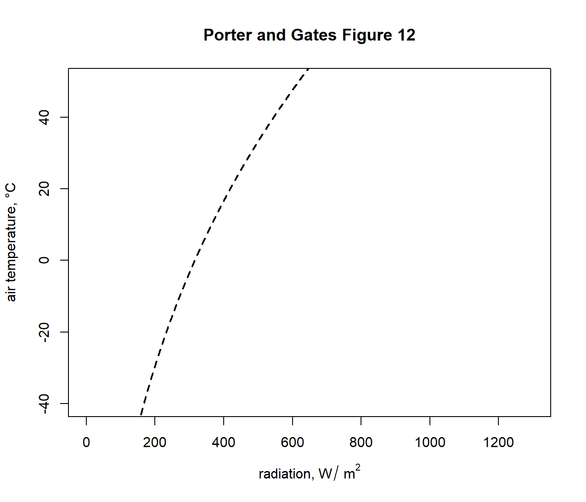
This shows, for example that if the object was in a cave at an air temperature of 2 °C it would experience a load of 325 \(W\:m^{-2}\). You can compute this exactly by typing Qbound(Tair = 2)$Q_blackbody.
Now let’s add the clear night sky curve.

You can see now that, on a night where the air temperature is 2 degrees, the object would now have a lower radiation load of 275 \(W\:m^{-2}\) because of the reduced downward flux of radiation from the cold night sky. In fact, this reduced radiation load is enough to drop the ground temperature to zero degrees and cause a frost - i.e. frosts often happen on clear nights when the air temperature measured by a weather station (1-2m above the ground) is 2 °C or lower.
Finally, let’s add the sunny day curve.

Now, on a day of 2 °C in the sunshine an object would have a radiation load of around 610 \(W\:m^{-2}\), if it absorbed all the solar radiation hitting it.
The next code chunk loops through a sequence of object absorptivities from 0.2 to 0.8, computes the daytime solar load and plots the results as orange lines on the graph, so we have a figure equivalent to Figure 12 in Porter and Gates (1969).
alphas <- seq(0.2, 0.8, 0.2)
for(i in 1:length(alphas)){
alpha_s <- alphas[i]
climspace <- Qbound(Tair = T_air, Tsub = T_air, Zenith = Zenith,
tau = tau, alpha_s = alpha_s, alpha_g = alpha_g)
Q_day <- climspace$Q_day
points(Q_day, T_air, type = 'l', col = 'orange', lwd = 2)
}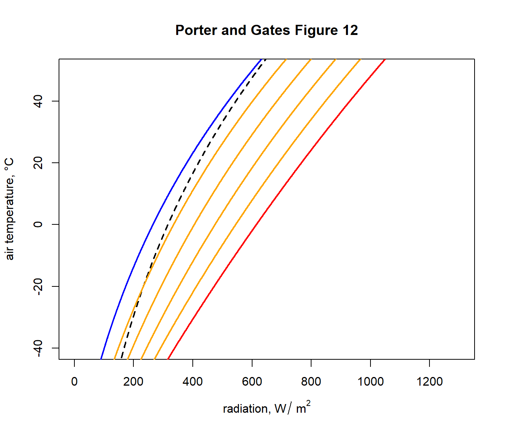
9.4.3 Plotting the climate space of the Desert Iguana
The diagram we just plotted shows the range of available combinations of air temperature and radiation available to a cylindrical object on earth. Environments within this subset of environmental space will of course have very different ecological implications for different organisms, depending on their physiology and other environmental conditions (wind speed and humidity in particular).
Our next task is to work out the climate space within which survival is possible, in terms of body temperature, for the Desert Iguana. To do this, we need to solve a heat budget equation for the lizard at its body temperature limits, as shown in Figure 13 of Porter and Gates (1969).
The csv file ‘climate_space_pars.csv’ contains all the data found on the climate space figures of the seven animals considered in Porter and Gates (1969). Read it in and take a look at the first 6 lines with the head function.
climate_space_pars <-
as.data.frame(read.csv("data/climate_space_pars.csv"))
head(climate_space_pars)[,c(1:8)]## Name Genus Species M E_ex E_sw d_f d_b
## 1 Desert Iguana Dipsosaurus dorsalis 0.0002 2e-04 0 0.0 0.1
## 2 Desert Iguana Dipsosaurus dorsalis 0.0010 1e-03 0 0.0 0.1
## 3 Desert Iguana Dipsosaurus dorsalis 0.0030 3e-03 0 0.0 0.1
## 4 Desert Iguana Dipsosaurus dorsalis 0.0060 5e-03 0 0.0 0.1
## 5 Desert Iguana Dipsosaurus dorsalis 0.0150 9e-03 0 0.0 0.1
## 6 Shrew Sorex cinereus 0.4960 0e+00 0 0.3 0.1## T_b T_s D abs_max abs_min k_b k_f hgt
## 1 3.0 3.0 1.5 0.8 0.6 0.07197133 0.0000 1
## 2 20.0 20.0 1.5 0.8 0.6 0.07197133 0.0000 1
## 3 30.0 30.0 1.5 0.8 0.6 0.07197133 0.0000 1
## 4 40.0 40.0 1.5 0.8 0.6 0.07197133 0.0000 1
## 5 45.0 45.0 1.5 0.8 0.6 0.07197133 0.0000 1
## 6 37.5 -5.5 1.8 0.8 0.8 0.02940000 0.0036 1You can see it has the metabolic rate, \(M\) and evaporative heat lost by breathing \(E_ex\) and sweating \(E_sw\), in units of \(cal\:cm^{-2}\:min^{-1}\) for different body temperatures \(T_b\). There are also columns for the depth of the fat layer of the body \(d_b\) and the fur layer \(d_f\), as well as the diameter of the body \(D\), all in cm. The conductivity of the fat and fur are \(k_b\) and \(k_f\), respectively, in cal min-1 cm-1 °C-1), the maximum and minimum solar absorptivity \(abs_{max}\) and \(abs_{min}\) and the height of the midpoint of the animal above the ground, \(hgt\).
Let’s subset this to just the Desert Iguana, using the subset function.
Next, we need to convert this data into SI units.
pars[,4:6] <- pars[,4:6] * (4.185 / 60 * 10000)
# convert heat flows from cal/min/cm2 to J/s/m2 = W/m2
pars[,14:15] <- pars[,14:15] * (4.185 / 60 * 100)
# convert thermal conductivities from cal/(min cm °C)
# to J/(s m °C) = W/(m °C)
pars[,c(7:8,11,16)] <- pars[,c(7:8,11,16)] / 100
# convert cm to mNow, we need an equation for the heat budget - a version of equation 9 in Porter and Gates (1969) - that gives us the radiation values that go with a set of air temperatures to produce a particular body temperature. That equation is
\[Q_{abs} = \epsilon \sigma T_{r}^4 + h_c (T_r - T_{air}) + E_{ex} + E_{sw} - M\]
As in Porter and Gates (1969) p. 235, we can substitute \(T_r\) with
\[T_b - (M - E_{ex} - E_{sw}) / K_b + 273.15\]
with \(T_b\) in °C and where the skin’s thermal conductance \(K_b = k_b/d_b\), where \(k_b\) is the conductivity of the skin and \(d_b\) is the thickness of the skin.
Also, to compute the convection coefficient \(h_c\) we deviate slightly from Porter and Gates (1969) and instead follow the recommendation of Gates (1980) (equation 12.52, p. 422) where
\[h_c = 3.49 (V^\frac{1}{2} / D^\frac{1}{2})\].
Here is the code to create this function.
# Computes absorbed radiation required to produce a specified core
# temperature for a value (or a range of values) of air
# temperature at a given wind speed, based on equation of Porter
# and Gates (1969) and Gates (1980)
# organism inputs
# D, organism diameter, m
# T_b, body temperature at which calculation is to be made, °C
# M, metabolic rate, W/m^2
# E_ex, evaporative heat loss through respiration, W/m^2
# E_sw, evaporative heat loss through sweating, W/m^2
# K_b, thermal conductance of the skin, W/m^2/°C
# epsilon, emissivity of the skin, -
# environmental inputs
# Tair, A value, or vector of values, of air temperatures, °C
# V, wind speed, m/s
# output
# Q_abs, predicted radiation absorbed, W/m^2
Qabs_ecto <-
function(D, T_b, M, E_ex, E_sw, K_b, epsilon, T_air, V) {
sigma <- 5.670373e-8 # W/m2/k4 Stephan-Boltzman constant
T_r <- T_b - (M - E_ex - E_sw) / K_b
h_c <- 3.49 * (V^(1/2) / D^(1/2))
Q_abs <- epsilon * sigma * (T_r + 273.15)^4 + h_c *
(T_r - T_air) - M + E_ex + E_sw
return(Q_abs)
} Now let’s plot the boundaries of the climate space diagram for this particular case, using the maximum solar absorptivity from the table of parameters for the Desert Iguana.
a_max <- pars$abs_max[1] # get the maximum solar absorptivity
# value, choosing row 1
# cal Qbound to get available radiation/air temp combinations
climspace <- Qbound(Tair = T_air, Tsub = T_air, Zenith = Zenith,
tau = tau, alpha_s = a_max, alpha_g = alpha_g)
Q_day <- climspace$Q_day
Q_night <- climspace$Q_night
Q_blackbody <- climspace$Q_blackbody
# plot the bounding lines
plot(Q_blackbody,T_air,ylim=c(-40,50),xlim=c(0,1300),type='l',
col='black',lwd=2, lty = 2, xlab='radiation, W/m2',
ylab='air temperature, deg C', main = "Desert Iguana")
points(Q_night,T_air,type='l',col='blue',lwd=2)
points(Q_day,T_air,type='l',col='red',lwd=2)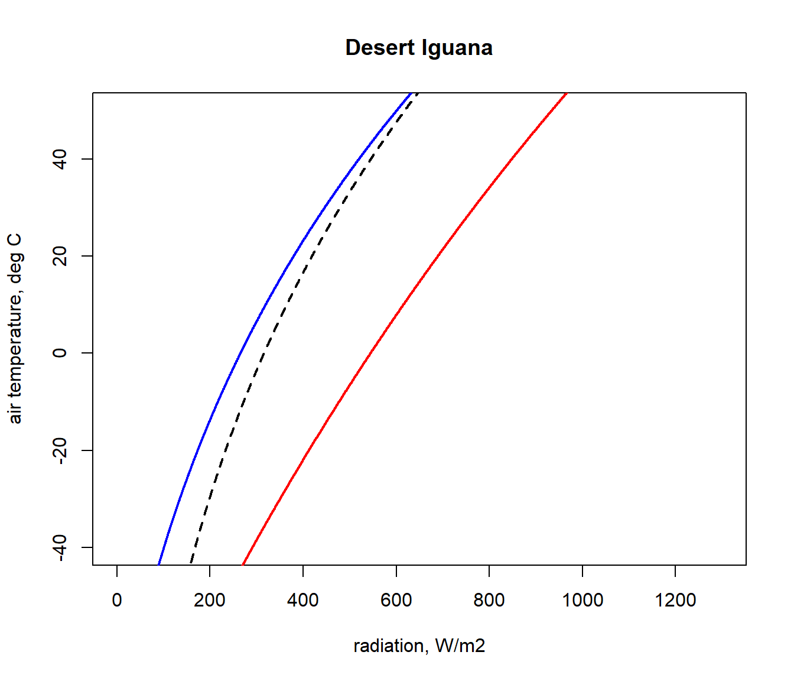
Next, we will get the input data for the Qabs_ecto function we just created from the ‘pars’ table for the situation where a Desert Iguana has a body temperature of 3 °C, its lower survivable limit.
# choose data for the first row of the 'pars' table, which are
# the values for when T_b is 3 °C
D <- pars$D[1] # diameter, m
T_b_lower <- pars$T_b[1] # body temperature, °C
M <- pars$M[1] # metabolic rate, W/m^2
E_ex <- pars$E_ex[1] # evaporative heat loss from respiration,
# W/m^2
E_sw <- pars$E_sw[1] # evaporative heat loss from sweating, W/m^2
k_b <- pars$k_b[1] # thermal conductivity of the skin, W/(m °C)
K_b <- k_b/pars$d_b[1] # thermal conductance of the skin,
# W/(m^2 °C)
epsilon <- 1 # emissivity, -Finally, we need to choose a wind speed and set of air temperatures at which to make the calculation, and then run the Qabs_ecto function.
V <- 0.1 # wind speed, m/s
T_air<-seq(-60,60,0.1) # air temperature range to consider, °C
Q_abs_lower <- Qabs_ecto(D = D, T_b = T_b_lower, M = M,
E_ex = E_ex, E_sw = E_sw, K_b = K_b,
epsilon = epsilon, T_air = T_air, V = V)Now, in the ‘Q_abs_lower’ variable we have a vector of amounts of absorbed radiation corresponding to each air temperature in our ‘T_air’ variable that would result in a ‘T_b’ of 3 °C if the wind speed was 0.1 m/s. We will now plot this result on our climate space diagram.
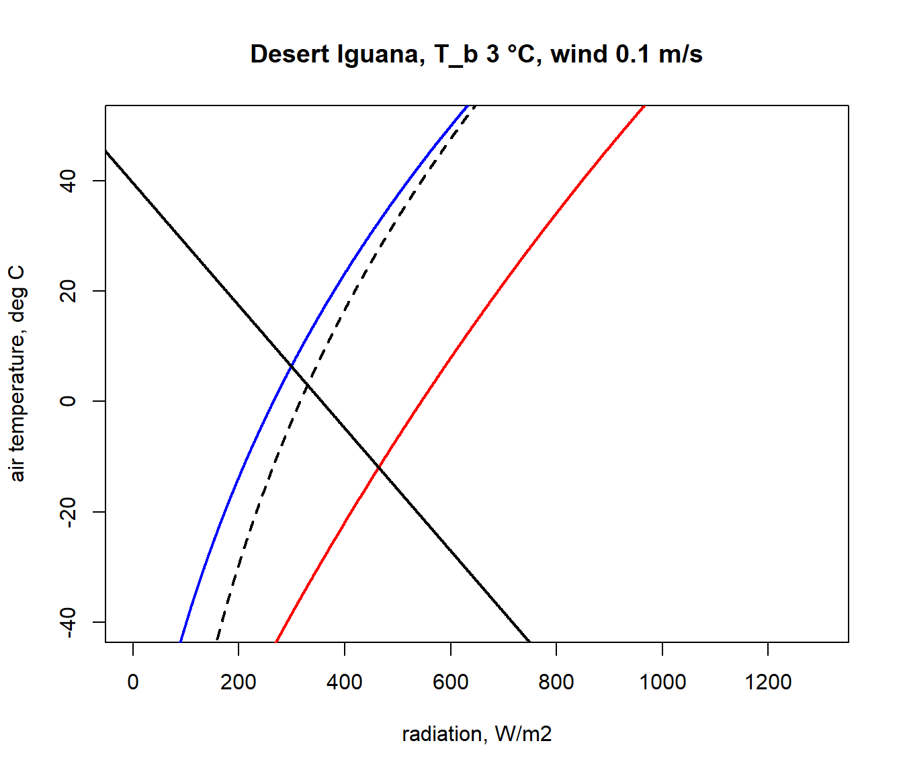
Let’s now repeat the calculation but for the case of the extreme upper ‘T_b’ of 45 °C.
# choose data for the fifth row of the 'pars' table, which are
# the vales for when T_b is 45 °C
D <- pars$D[5] # diameter, m
T_b_upper <- pars$T_b[5] # body temperature, °C
M <- pars$M[5] # metabolic rate, W/m2
E_ex <- pars$E_ex[5] # evaporative heat loss from respiration,
# W/m^2
E_sw <- pars$E_sw[5] # evaporative heat loss from sweating, W/m^2
k_b <- pars$k_b[5] # thermal conductivity of the skin, W/(m °C)
K_b <- k_b/pars$d_b[5] # thermal conductance of the skin,
# W/(m^2 °C)
points(Q_night,T_air,type='l',col='blue',lwd=2)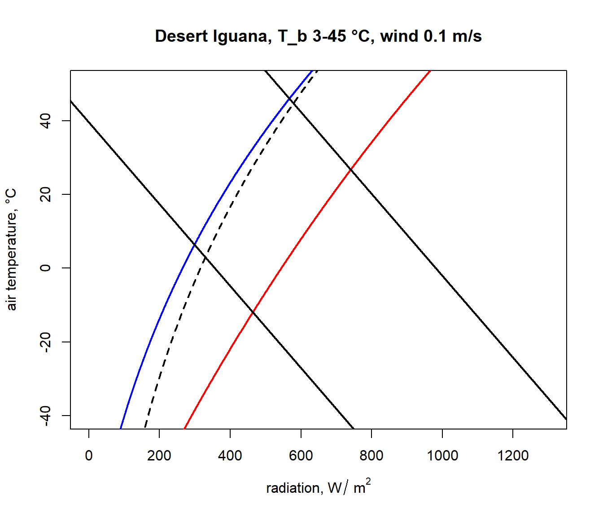
The parts of these two lines in between the blue clear night and red sunny day lines are the boundaries within the actual air temperature and radiation climate space on planet earth where the Desert Iguana would be either 3 or 45 °C, and the area within all of these lines is the survivable set of combinations of air temperature and radiation on earth leading to a body temperature at or within these lethal limits.
Here is some code to find the corners of the climate space and to tidy up the plot so that we only see the relevant parts of the lines and thus depict an area in this two-dimensional space, as in the diagrams of Porter and Gates (1969). A more elegant approach would be to solve the relevant equations for where they intersect, but the code below will suffice for our purposes.
# first make a table that has air temperature, corresponding
# radiation absorbed for a body temperature of 3 and 45 °C,
# and the clear night and sunny day conditions
climate_space <- as.data.frame(cbind(T_air, Q_abs_lower,
Q_abs_upper, Q_night, Q_day))
#now get the differences between the radiation levels for the
#night and day radiation bounding curves and the 3 and 45 °C lines
climate_space$min_lower <-
climate_space$Q_abs_lower-climate_space$Q_night
climate_space$max_lower <-
climate_space$Q_abs_lower-climate_space$Q_day
climate_space$min_upper <-
climate_space$Q_abs_upper-climate_space$Q_night
climate_space$max_upper <-
climate_space$Q_abs_upper-climate_space$Q_day
# find the row positions in the climate_space table where the
# square of the differences is minimised for the night and day
# bounding curves for each threshold
mx_lower <- which.min(climate_space$min_lower^2)
mn_lower <- which.min(climate_space$max_lower^2)
mx_upper <- which.min(climate_space$min_upper^2)
mn_upper <- which.min(climate_space$max_upper^2)
# use these row position limits to extract only the radiation/air
# temperature combinations within the clear night and sunny day
# bounds
limits_lower <- cbind(Q_abs_lower[mn_lower:mx_lower],
T_air[mn_lower:mx_lower])
limits_lower <- as.data.frame(limits_lower)
colnames(limits_lower) <- c("Q_abs", "T_air")
limits_upper <- cbind(Q_abs_upper[mn_upper:mx_upper],
T_air[mn_upper:mx_upper])
limits_upper <- as.data.frame(limits_upper)
colnames(limits_upper) <- c("Q_abs", "T_air")
# get the corners of the climate space diagram - i.e. the limiting
# combinations of radiation and air temperature for night and day
# at each thermal limit
night_cold <- limits_lower[nrow(limits_lower),]
# cold clear sky limit (in the open)
day_cold <- limits_lower[1,] # cold clear sky limit (in the sun)
day_hot <- limits_upper[1,]
# hot clear sky day limit (in the open)
night_hot <- limits_upper[nrow(limits_upper),]
# hot clear sky night limit (in the open)
# create limited bounding night and day curves
night <- cbind (Q_night, T_air)
day <- cbind (Q_day, T_air)
limits_night <- subset(night,Q_night > as.numeric(night_cold[1]) &
Q_night < as.numeric(night_hot[1]))
limits_day <- subset(day,Q_day > as.numeric(day_cold[1]) & Q_day <
as.numeric(day_hot[1]))
# plot the final subsetted data
plot(Q_blackbody,T_air,ylim=c(-40,50),xlim=c(0,1300),type='l',
col='black',lwd=2,lty=2,xlab=expression('radiation,'~W/~m^2),
ylab='air temperature, °C', main = paste0("Desert Iguana,
T_b", T_b_lower,"-",T_b_upper," °C, wind ", V, " m/s"))
points(limits_night[,1], limits_night[,2],type='l',col='blue',
lwd=2)
points(limits_day[,1], limits_day[,2],type='l',col='red',lwd=2)
points(limits_lower$Q_abs, limits_lower$T_air, type = 'l',
lwd = 2)
points(limits_upper$Q_abs, limits_upper$T_air, type = 'l',
lwd = 2)
# put the values of the corner air temperatures on the plot
text(night_cold$Q_abs-50,night_cold$T_air,
round(night_cold$T_air,1))
text(day_cold$Q_abs+50,day_cold$T_air, round(day_cold$T_air,1))
text(night_hot$Q_abs-50,night_hot$T_air, round(night_hot$T_air,1))
text(day_hot$Q_abs+50,day_hot$T_air, round(day_hot$T_air,1))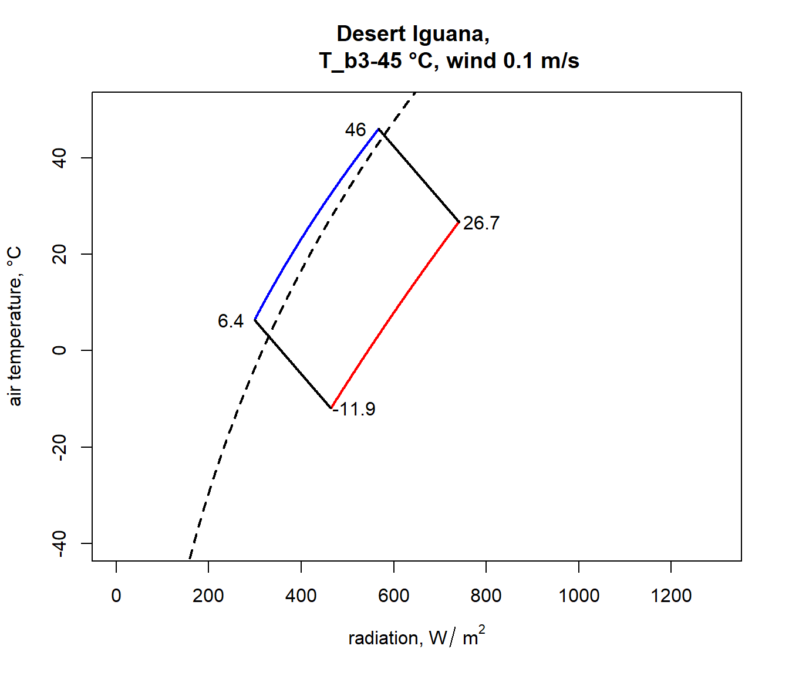
You have now computed the climate space for a dark (0.8 absorptivity) Desert Iguana at low wind speed (0.1 m/s). Now have a go at plotting the climate space of this species at different wind speeds and with the lower value for absorptivity (0.6) and higher wind speeds.
9.4.4 Plotting the climate space of the Zebra Finch
Next we will plot the climate space of an desert endotherm, the Zebra Finch (from Australia), and contrast it with the Desert Iguana. The procedure is almost the same. First, subset the data for the Zebra Finch from the ‘climate_space_pars’ table and convert to SI units as before.
pars <- subset(climate_space_pars, Name=="Zebra Finch")
pars[,4:6] <- pars[,4:6] * (4.185 / 60 * 10000)
# convert heat flows from cal/min/cm2 to J/s/m2 = W/m2
pars[,14:15] <- pars[,14:15] * (4.185 / 60 * 100)
# convert thermal conductivities from cal/(min cm °C)
# to J/(s m °C) = W/(m °C)
pars[,c(7:8,11,16)] <- pars[,c(7:8,11,16)] / 100
# convert cm to mThe equation for the heat budget of this endothermic organism with insulation is a little different, since it includes an insulation layer. This makes the calculation for \(T_r\) a little different. The equation is
\[T_r = T_b - (M - E_{ex}) / K_b - (M - E_{ex} - E_{sw}) / K_f + 273.15\]
The radiant temperature is now the body temperature offset by an additional factor capturing the resistance of the fur to heat flow, and \(K_f = k_f/d_f\), where \(k_f\) is the conductivity of the fur and \(d_f\) is the thickness of the fur.
Here is the code to create the endotherm-specific function for obtaining radiation absorbed given an air temperature, wind speed and physiological state.
# Computes absorbed radiation required to produce a specified core
# temperature for a value (or a range of values) of air
# temperature at a given wind speed, based on equation of Porter
# and Gates (1969) and Gates (1980)
# organism inputs
# D, organism diameter, m
# T_b, body temperature at which calculation is to be made, °C
# M, metabolic rate, W/m^2
# E_ex, evaporative heat loss through respiration, W/m^2
# E_sw, evaporative heat loss through sweating, W/m^2
# K_b, thermal conductance of the skin, W/m^2/°C
# K_f, thermal conductance of the fur, W/m^2/°C
# epsilon, emissivity of the skin, -
# environmental inputs
# Tair, A value, or vector of values, of air temperatures, °C
# V, wind speed, m/s
# output
# Q_abs, predicted radiation absorbed, W/m^2
Qabs_endo <-
function(D, T_b, M, E_ex, E_sw, K_b, K_f, epsilon, T_air, V) {
sigma <- 5.670373e-8 # W/m2/k4 Stephan-Boltzman constant
T_r <- T_b - (M - E_ex) / K_b - (M - E_ex - E_sw) / K_f
h_c <- 3.49 * (V^(1/2) / D^(1/2))
Q_abs <- epsilon * sigma * (T_r + 273.15)^4 + h_c *
(T_r - T_air) - M + E_ex + E_sw
return(Q_abs)
} Now let’s plot the boundaries of the climate space diagram for the typical solar absorptivity of the Zebra Finch.
a_max <- pars$abs_max[1] # get the maximum solar absorptivity
# value, choosing row 1
# call Qbound to get available radiation/air temp combinations
climspace <- Qbound(Tair = T_air, Tsub = T_air, Zenith = Zenith,
tau = tau, alpha_s = a_max, alpha_g = alpha_g)
Q_day <- climspace$Q_day
Q_night <- climspace$Q_night
Q_blackbody <- climspace$Q_blackbody
# plot the bounding lines
plot(Q_blackbody,T_air,ylim=c(-40,50),xlim=c(0,1300),type='l',
col='black',lwd=2,lty=2,xlab=expression('radiation, W/'~m^2),
ylab='air temperature, °C', main = "Zebra Finch")
points(Q_night,T_air,type='l',col='blue',lwd=2)
points(Q_day,T_air,type='l',col='red',lwd=2)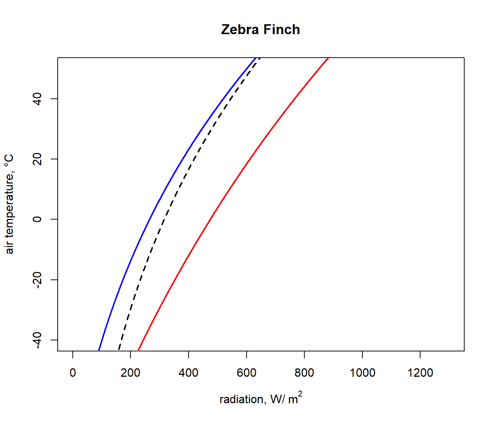
Next, we will get the input data for the Qabs_endo function for the situation where the Zebra Finch body temperature is 38.5 °C, its lower survivable limit (far higher than that of the Desert Iguana!).
# choose data for the first row of the 'pars' table, which are
# the vales for when T_b is 38.5 °C
D <- pars$D[1] # diameter, m
T_b_lower <- pars$T_b[1] # body temperature, °C
M <- pars$M[1] # metabolic rate, W/m^2
E_ex <- pars$E_ex[1] # evaporative heat loss from respiration,
# W/m^2
E_sw <- pars$E_sw[1] # evaporative heat loss from sweating, W/m^2
k_b <- pars$k_b[1] # thermal conductivity of the skin, W/(m °C)
K_b <- k_b/pars$d_b[1] # thermal conductance of the skin,
# W/(m^2 °C)
k_f <- pars$k_f[1] # thermal conductivity of the skin, W/(m °C)
K_f <- k_f/pars$d_f[1] # thermal conductance of the skin,
# W/(m^2 °C)
epsilon <- 1 # emissivity, -And as with the Desert Iguana, again we need to choose a wind speed and set of air temperatures at which to make the calculation, but now run the Qabs_endo function.
V <- 0.1 # wind speed, m/s
T_air <- seq(-60,60,0.1) # air temperature range to consider, °C
Q_abs_lower <- Qabs_endo(D = D, T_b = T_b_lower, M = M,
E_ex = E_ex, E_sw = E_sw, K_b = K_b, K_f = K_f,
epsilon = epsilon, T_air = T_air, V = V)Now, in the ‘Q_abs_lower’ variable we have a vector of amounts of absorbed radiation corresponding to each air temperature in our ‘T_air’ variable that would result in a ‘T_b’ of 38.5 °C if the wind speed was 0.1 m/s. We will now plot this result on our climate space diagram.
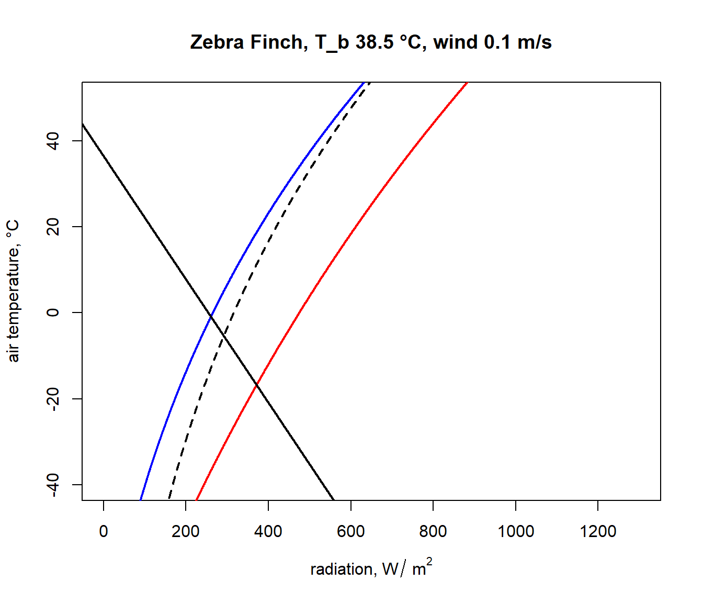
Let’s now repeat the calculation but for the case of the extreme upper ‘T_b’ of 42.5 °C.
# choose data for the third row of the 'pars' table, which are
# the vales for when T_b is 42.5 °C
D <- pars$D[3] # diameter, m
T_b_upper <- pars$T_b[3] # body temperature, °C
M = pars$M[3] # metabolic rate, W/m^2
E_ex <- pars$E_ex[3] # evaporative heat loss from respiration,
# W/m^2
E_sw <- pars$E_sw[3] # evaporative heat loss from sweating, W/m^2
k_b <- pars$k_b[3] # thermal conductivity of the skin, W/(m °C)
K_b <- k_b/pars$d_b[3] # thermal conductance of the skin, W/(m^2°C)
k_f <- pars$k_f[3] # thermal conductivity of the skin, W/(m °C)
K_f <- k_f/pars$d_f[3] # thermal conductance of the skin, W/(m^2°C)
epsilon <- 1 # emissivity, -
Q_abs_upper <- Qabs_endo(D = D, T_b = T_b_lower, M = M,
E_ex = E_ex, E_sw = E_sw, K_b = K_b, K_f = K_f,
epsilon = epsilon, T_air = T_air, V = V)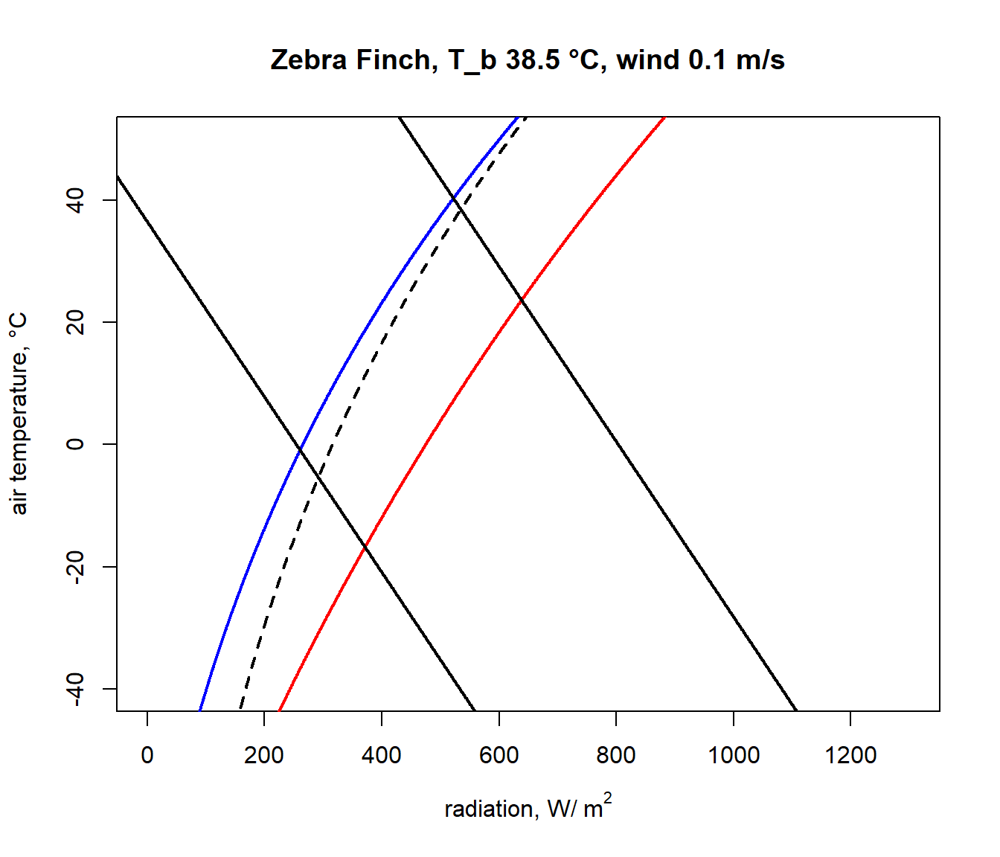
And finally, we run the code that removes the line segments outside the climate space boundaries, copied and pasted from above, to obtain our final diagram.
# first make a table that has air temperature, corresponding
# radiation absorbed for a body temperature of 3 and 45°C,
# and the clear night and sunny day conditions
climate_space <- as.data.frame(cbind(T_air, Q_abs_lower,
Q_abs_upper, Q_night, Q_day))
# now get the differences between the radiation levels for the
# night and day radiation bounding curves and the 3 and 45 °C lines
climate_space$min_lower <-
climate_space$Q_abs_lower-climate_space$Q_night
climate_space$max_lower <-
climate_space$Q_abs_lower-climate_space$Q_day
climate_space$min_upper <-
climate_space$Q_abs_upper-climate_space$Q_night
climate_space$max_upper <-
climate_space$Q_abs_upper-climate_space$Q_day
# find the row positions in the climate_space table where the
# square of the differences is minimised for the night and day
# bounding curves for each threshold
mx_lower <- which.min(climate_space$min_lower^2)
mn_lower <- which.min(climate_space$max_lower^2)
mx_upper <- which.min(climate_space$min_upper^2)
mn_upper <- which.min(climate_space$max_upper^2)
# use these row position limits to extract only the radiation/air
# temperature combinations within the clear night and sunny day
# bounds
limits_lower <- cbind(Q_abs_lower[mn_lower:mx_lower],
T_air[mn_lower:mx_lower])
limits_lower <- as.data.frame(limits_lower)
colnames(limits_lower) <- c("Q_abs", "T_air")
limits_upper <- cbind(Q_abs_upper[mn_upper:mx_upper],
T_air[mn_upper:mx_upper])
limits_upper <- as.data.frame(limits_upper)
colnames(limits_upper) <- c("Q_abs", "T_air")
# get the corners of the climate space diagram -
# i.e. the limiting combinations of radiation and air temperature
# for night and day at each thermal limit
night_cold <- limits_lower[nrow(limits_lower),]
# cold clear sky limit (in the open)
day_cold <- limits_lower[1,] # cold clear sky limit (in the sun)
day_hot <- limits_upper[1,] #hot clear sky day limit (in the open)
night_hot <- limits_upper[nrow(limits_upper),]
# hot clear sky night limit (in the open)
# create limited bounding night and day curves
night <- cbind (Q_night, T_air)
day <- cbind (Q_day, T_air)
limits_night <- subset(night,Q_night > as.numeric(night_cold[1]) &
Q_night < as.numeric(night_hot[1]))
limits_day <- subset(day,Q_day > as.numeric(day_cold[1]) & Q_day <
as.numeric(day_hot[1]))
# plot the final subsetted data
plot(Q_blackbody,T_air,ylim=c(-40,50),xlim=c(0,1300),type='l',
col='black',lwd=2,lty=2,xlab=expression('radiation, W/'~m^2),
ylab='air temperature, °C',main=paste0("Zebra Finch, T_b ",
T_b_lower,"-",T_b_upper," °C, wind ", V, " m/s"))
points(limits_night[,1], limits_night[,2],type='l',col='blue',
lwd=2)
points(limits_day[,1], limits_day[,2],type='l',col='red',lwd=2)
points(limits_lower$Q_abs, limits_lower$T_air, type = 'l',
lwd = 2)
points(limits_upper$Q_abs, limits_upper$T_air, type = 'l',
lwd = 2)
# put the values of the corner air temperatures on the plot
text(night_cold$Q_abs-50,night_cold$T_air,
round(night_cold$T_air,1))
text(day_cold$Q_abs+50,day_cold$T_air, round(day_cold$T_air,1))
text(night_hot$Q_abs-50,night_hot$T_air, round(night_hot$T_air,1))
text(day_hot$Q_abs+50,day_hot$T_air, round(day_hot$T_air,1))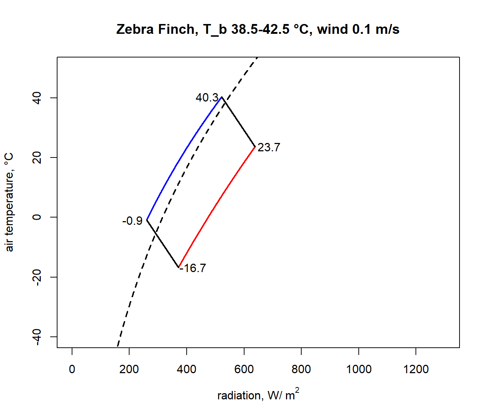
Notice how strikingly similar the climate space is for the Zebra Finch and the Desert Iguana (re-plotted below), despite their extremely different body temperature limits. What are the key differences between them in the environments they can tolerate, and what is it about the physiology of these two species that makes them have such similar climate spaces? Does the similarity extend to environments of higher wind speed?
In a subsequent module you will learn now to work with gridded microclimate data and map biophysical calculations of climate spaces onto geographic spaces.
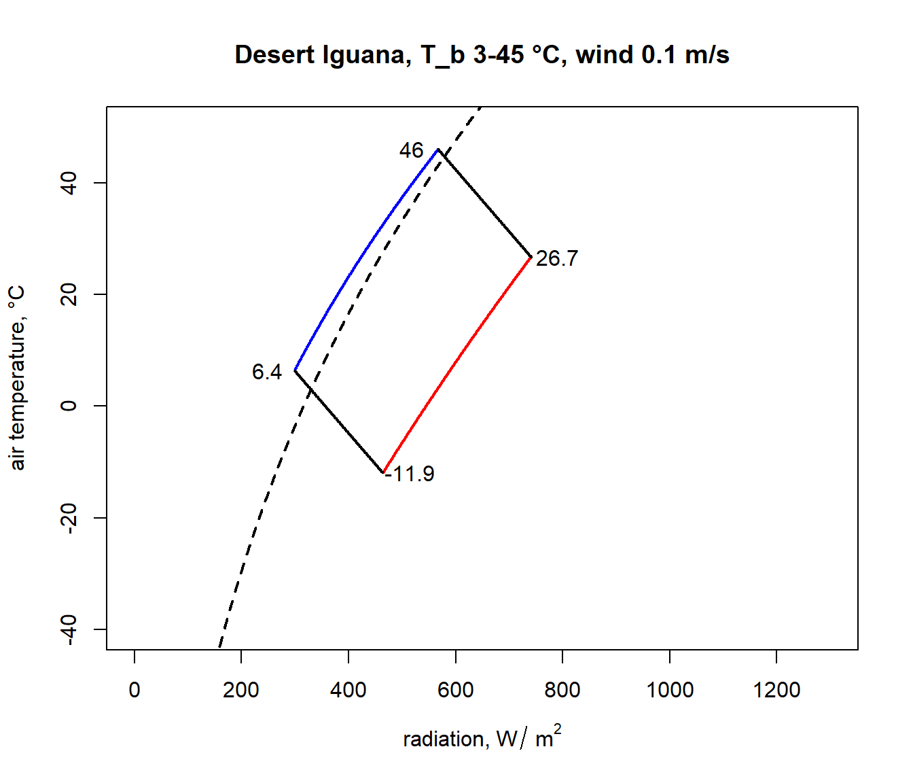
9.4.5 The Lizard
To write down the heat energy budget of a lizard we need only sum up the heat transfer components. Initially we consider only three of these components (absorbed radiation, reradiation and convection) because metabolism and water loss are small and they tend to cancel each other out (Porter et al. 1973). The energy entering the system must equal that which is leaving, so
\[\begin{equation} Q_a = \varepsilon \sigma ( T_s + 273)^4 + h_c (T_s - T_a ) \tag{9.5} \end{equation}\]
where- \(Q_a\) = longwave and shortwave radiation absorbed by the organism (\(W m^{-2}\)),
- \(\varepsilon\) = emissivity (0.96),
- \(\sigma\) = Stefan-Boltzmann constant 5.67 \(\times\) 10-8 (\(W m^{-2} K^{-4}\)),
- \(T_s\) = surface temperature of the lizard (\(^{\circ}C\)),
- \(T_a\) = air temperature (\(^{\circ}C\)),
- \(h_c\) = convection coefficient (\(W m^{-2} {^{\circ}C^{-1}}\)),
Originally Porter and Gates (1969) suggested that the convection coefficient should take the form
\[\begin{equation} h_c = k_c V^{0.33} D^{-0.67} \tag{9.6} \end{equation}\]
where- \(k_c\) = a constant 0.9274 \(W m^{-2} {^{\circ}C^{-1}} (m)^{0.67} (m/s)^{-0.33}\)
- \(V\) = wind speed (\(m s^{-1}\))
- \(D\) = diameter of the animal or cylinder (\(m\)).
Recently Mitchell (1976) found a spherical shape is the best overall model for convective transfer in the terrestrial environment. He used weight divided by density, which is equal to the volume, all to the one-third power as the characteristic dimension instead of the diameter. (Using laboratory measurements it is often possible to get better estimates of he for a particular geometry.) Generally one would calculate the Reynolds and Nusselt numbers to find the heat transfer coefficient (Kreith 1973). This procedure is outlined in the module on heat transfer processes (Stevenson 1978). With a number of assumptions which introduce only small errors, it is possible to write Mitchell’s result in the same form as that of Porter and Gates (see Appendix II). We have
\[\begin{equation} h_c = k_s V^{0.60} {M_b}^{-0.133} \tag{9.7} \end{equation}\]
where- \(k_s\) = constant 17.24 \(W m^{-2} {^{\circ}C} (m s^{-1})^{-0.60} (kg)^{0.133}\)
- \(M_b\) = body mass (\(kg\))
and \(h_c\) and \(V\) are as in Equation 6. We further assume that the body temperature \(T_b\) is approximately equal to the surface temperature \(T_s\). (The error in this assumption will be checked in Problem 1.) The heat energy balance can now be written
\[\begin{equation} Q_a = \varepsilon \sigma (T_b + 273)^4 + k_s V^{0.60} {M_b}^{-0.133} (T_b-T_a) \tag{9.8} \end{equation}\]
We can implement this analysis in R:
E= 0.96 #emissivity
sigma= 5.67 * 10^{-8} #Stefan-Boltzmann's constant (W m^-2K^-4)
k_s= 17.24 #W m^-2 °C (m s^-1)^-0.60 (kg)^0.133
#PLOT ENVIRONMENTAL CONSTRAINTS
Q_a = function(T_a) (a_L*sigma*(T_g + 273)^4 +
1.22*a_L*sigma*(T_a + 273)^4 - 171)/2
T_a_plot= -40:40
T_g= T_a_plot
#left line: night
a_L=1 #mean absorptivity to longwave radiation
Q_a_plot= Q_a(T_a_plot)
plot(Q_a_plot, T_a_plot, type="l", xlim=range(0,1000),
xlab=expression("Absorbed Radiation" ~ Q_a ~ (W ~ m^{-2})),
ylab= expression("Air temperature" ~ T_a ~ "(°C)"))
#right line: full sun ##see Appendix I##
a_L=0.8 #mean absorptivity to longwave radiation
Q_a_plot= Q_a(T_a_plot)
points(Q_a_plot, T_a_plot, type="l")
#PLOT ORGANISMAL CONSTRAINTS
V= 1.0 #windspeed (m s^-1)
M_b= 0.027 # body mass (kg)
T_b= 39 # (C)
Q_a= function(T_a) E*sigma*(T_b + 273)^4 +
k_s*V^{0.60}*M_b^{-0.133}*(T_b-T_a)
T_a_plot= -40:40
Q_a_plot= Q_a(T_a_plot)
#upper line
points(Q_a_plot, T_a_plot, type="l")
#lower line
T_b= 3
Q_a_plot= Q_a(T_a_plot)
points(Q_a_plot, T_a_plot, type="l")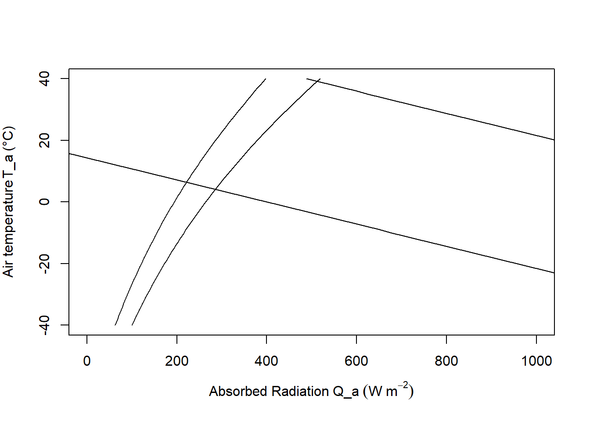
To construct the climate space of the lizard, we need to make assumptions about the variables of Equation (9.8). If \(V\), \(M_b\) and \(T_b\) are specified as constants, there is a linear relationship between \(Q_a\) and \(T_a\). We illustrate this in Figure 9.6 by plotting the upper line for \(V = 1.0 m s^{-1}\), \(M_b = 0.027 kg\), and \(T_b = 39°C\), and the bottom line with only \(T_b\) changed to \(3°C\). The shaded region in Figure 9.6 is the climate space of the reptile if the wind speed is the average value for the microclimate that the lizard inhabits, and if the body temperatures given are the upper and lower bounds that the animal can tolerate.
Examination of the climate space diagram allows interpretation of several of the parameters of the heat energy balance model. The boundary points of the space indicate the extreme values that the lizard is likely to encounter and still survive. The lower left-hand point of the diagram tells us that if the reptile is exposed to a clear sky at night, its body temperature will remain high enough to survive as long as the air temperature is above \(7°C\). The opposite corner shows that \(27°C\) is the extreme air temperature that the lizard could endure if it were exposed to strong sunlight.
The effect of changing color is also illustrated in Figure 9.6. In desert environments lizards often lighten their color which lowers their mean absorptivity. For example, lowering the mean absorptivity from 0.8 to 0.6 in Figure 9.6 allows the lizard to increase the air temperature that it can survive from about \(30°C\) to \(32°C\). Norris (1967) has extensively studied the effect of color change on the thermal adaptations of desert lizards.
Increased wind speed increases the relative importance of the convective term and couples the body temperature of the animal more closely to the air temperature. Figure 9.7 shows the influence of wind speed on the energy balance. As the wind speed increases from \(0.1 m s^{-1}\) to \(10.0 m s^{-1}\) the physiological line becomes more horizontal.
We can visualize the effect of size by picking body masses of 0.001, 0.10, 10.0 and 100.0 kg to insert in Equation (9.8) and plotting the lines in Figure 9.8. As size or weight increases, the boundary layer thickens, decreasing the rate of convective exchange (a smaller component of the heat balance). This is readily seen algebraically by re-examining the convection term. We conclude that increasing size has the same effect as decreasing wind speed. It is also clear from Figure 9.8 that most lizards (less than 1.0 kg) are closely tied to the air temperature.
Figure 9.6: The hatched area is the climate space of a lizard with absorptivity to sunlight of 0.8. If the animal decreases its absorptivity to 0.6 it can increase the air temperature it can withstand from 30 to 32.5 °C. The darkened areas refer to problem 4.
There are several observations which suggest that the thermoregulation behaviors we might predict from considering this model indeed occur. Porter and Gates (1969) observed that the small lizard (Uta stansburiana) (0.004 kg approximately) which is tightly coupled to the air temperature climbs rocks early in the morning. They hypothesized that this behavior was taken to avoid the cold layer of air at the ground surface. Alternatively we might ask what options are available if the lizard does not want to become too hot. From Equation (9.8) we see that there are at least two strategies. The animal can reduce the absorbed radiation \(Q_a\) by going to a shaded environment or it can increase its convective heat loss by climbing bushes where the wind speed is greater and \(T_a\) is lower. Descriptions of the daily activity patterns of the desert iguana (Dipsosaurus dorsalis) from field observations, show that both these options are used. The lizard emerges from its burrow in the morning. As \(T_a\) and \(Q_a\) increase, the animals move into the shade, then higher into the shrubs, and finally retreat Porter et al. (1973) found good agreement between the predicted behavior from their heat transfer model and the morning activity pattern of this species.
Figure 9.7: To investigate the effect of windspeed on the thermal balance
Figure 9.8: To illustrate the effect of size, values of weight, Mb, from 0.001 to 100 kg were substituted into equation 8 and plotted here.
9.4.6 The Cardinal
Our second and final example is the climate space diagram of the cardinal (Richmnondena cardinalis). Several additional terms of the heat energy balance are important here. As in all homeotherms metabolism and water loss are significant sources of heat production and loss which cannot be neglected in the thermal budget. The food necessary to produce metabolic heat energy for thermoregulation is about 85% of the animal’s total requirements (Bartholomew 1977). The benefits for this energetic cost probably include both the ability to process food faster and more efficiently and greater independence from the unpredictable patterns of the weather than ectotherms. The cardinal loses the majority of its water by exhaling air saturated with water vapor, although other species of birds may lose up to 50% of their water through their skin (Lasiewski et al. 1966).
The energy balance must now be written \[\begin{equation} M + Q_a = \varepsilon \sigma (T_r + 273)^4 + h_c (T_r - T_a) + E_{ex} \tag{9.9} \end{equation}\]
where- \(M\) = metabolic rate (\(W m^{-2}\)),
- \(Q_a\) = absorbed radiation (\(W m^{-2}\)),
- \(\varepsilon\) = emissivity
- \(\sigma\) = Stefan-Boltzmann constant (\(W m^{-2} K^{-4}\))
- \(T_a\) = air temperature
- \(h_c\) = convection coefficient (\(W m^{-2} {^{\circ}C^{-1}}\))
- and \(E_{ex}\) = energy flux due to respiration (\(W m^{-2}\)).
Since there are internal sources and sinks of energy production (\(M\) and \(E_{ex}\)) introduced into the equation we must consider heat transfer within the animal. Figure 9.9 from Porter and Gates (1969) shows a schematic view of an idealized animal in the shape of a cylinder. The isothermal core is at body temperature \(T_b\), the skin surface is at temperature \(T_s\), and the outer surface of the feathers (or fur) is at \(T_r\). Water loss through the skin, \(E_{sw}\) (sweating), is included for generality. For the First Law of Thermodynamics and our steady state assumption we know that the energy crossing each boundary is the same. Beginning with the two inside circles the energy flow across the region of thickness \(d_b\) is equal to the potential (temperature difference) times the resistance (but see problem 6). Therefore, \[\begin{equation} M - E_{ex} = \frac{k_b}{d_b} (T_b - T_s) \tag{9.10} \end{equation}\]
where \(k_b\) is the thermal conductivity of fat (\(0.205 W m^{-1} {^{\circ}C^{-1}}\)). By similar reasoning across the second potential we have
\[\begin{equation} M - E_{ex} - E_{sw}= \frac{k_f}{d_f} (T_s - T_r) \tag{9.11} \end{equation}\]
where \(d_f\) is the thickness of the fur or feathers in meters and \(k_f\) is the thermal conductivity of air (\(0.025 W m^{-1} {^{\circ}C^{-1}}\)). The quantity of particular interest is the difference between the body temperature and the surface temperature \(T_b - T_r\). We see that \(T_b - T_r\) can be written as
\[\begin{equation} T_b - T_r = (T_b - T_s) + (T_s - T_r) \tag{9.12} \end{equation}\]
Rearranging our heat flow equations ((9.10) and (9.11)) and substituting into Equation (9.12) for \(T_b - T_s\) and \(T_s - T_r\) we have
\[\begin{equation} T_b - T_r = \frac{d_b}{k_b} (M - E_{ex}) + \frac{d_f}{k_f} (M - E_{ex} - E_{sw}). \tag{9.13} \end{equation}\]
In the case of the cardinal \(E_{sw}\) is assumed to be zero so Equation (9.13) reduces to
\[\begin{equation} T_b + T_r = (M - E_{ex}) (\frac{d_b}{k_b} + \frac{d_f}{k_f}) \tag{9.14} \end{equation}\]
Equation (9.14) can be used to calculate the surface temperature \(T_r\) if the other variables are specified. Once \(T_r\) is known, Equation (9.9) can be used to construct the climate space. Values for the parameters of Equations (9.9) and (9.14) are taken from Porter and Gates (1969) and reproduced in Table 1. These are used to construct the climate space of the cardinal in Figure 9.10. The numerals correspond to those in the table. Given these conditions the cardinal needs increased metabolic output and thicker insulation to withstand cold conditions. Such low levels of radiation and air temperature will occur just before sunrise during the winter. One would expect the bird to minimize its heat loss by seeking a sheltered microhabitat to avoid radiating to the atmosphere and to reduce the wind speed. Porter and Gates (1969, p. 237) add, “By tucking its bill under its wing, the cardinal will also reduce surface area and water loss.” It is also interesting to examine the range of conditions for which the animal can remain in steady state if its metabolic output is at a minimum and \(T_b\) is constant. The set of lines numbered II and III illustrate these conditions. Line IV is the upper limit ofstress that the cardinal can endure.
Figure 9.9: Concentric cylinder model of animal for heat transfer analysis. M=metabolism,\(E_{ex}\)=respiratory moisture loss, \(E_{sw}\)=moisture loss by sweating, \(T_b\)=body temperature, \(T_s\)=skin temperature, \(T_r\)= radiant surface temperature, \(k_b\) = conductivity of fat, \(k_f\) = conductivity of fur or feathers, \(d_b\)=thickness of fat, and \(d_f\)= thickness of fur or feathers. From Porter, W.P.and D.M. Gates. 1969. P. 230.
Figure 9.10: Climate diagram for a cardinal showing relations between air temperature, radiation absorbed, and wind speed for constant body and radiant surface temperatures at actual values of metabolic and water loss rates. From Porter, W. P. and D. M. Gates. 1969. p. 237.
Table I. Values for the climate space of the cardinal.
| \(M\) | \(E_{ex}\) | \(d_f\) | \(d_b\) | \(T_b\) | \(T_r\) | |
|---|---|---|---|---|---|---|
| I | 107 | 3 | Var | 2 | 38.5 | -16.0 |
| II | 53 | 5 | 10 | 2 | 41.0 | 21.4 |
| III | 53 | 9 | 5 | 1 | 41.0 | 37.1 |
| IV | 77 | 77 | 5 | 1 | 42.5 | 42.5 |
\(M\) and \(E_{ex}\) in \(W m^{-2}\), \(d_f\) and \(d_b\) in \(m \times 10^{-3}\), \(T_b\) and \(T_r\) in \(^{\circ}C\), \(M_b = 0.025kg\).
9.4.7 Monteith’s Idea
In Chapter 10 of his book, Monteith (1973) presents a graphical representation of the energy balance equation which has some similarities to the climate space diagram. Instead of using absorbed radiation, he defines a quantity \(R_{ni}\) (also see Hatheway 1978) which is equal to \(Q_a - (T_a + 273)^4\) to use on the abscissa. Next he derives an expression to represent the heat flow of the organism as though it were simply conducting heat to the environment \[(M - E) = \frac{C_a P}{r_{hr}} (T_o - T_e)\] where- \(M\) = metabolism (\(W m^{-2}\))
- \(E\) = water loss (\(W m^{-2}\))
- \(T_o\) = surface temperature (\(^\circ C\))
- \(T_e\) = effective temperature of the environment (\(^{\circ}C\))
- \(\frac{C_a P}{r_{hr}}\) = equivalent conductivity (\(W m^{-2} {^{\circ}C^{-1}}\))
The equivalent conductivity is due to a weighing of the resistance to convection and radiation transfer. Figures 9.11 and 9.12 taken from Monteith illustrate his method. Notice that there is a substantial metabolic contribution to the energy balance when the locust is flying and that when the insect is resting the environmental temperature is equal to the skin temperature \(T_s\) which will also equal the body temperature. Furthermore, if the environmental conditions (air temperature, wind speed, and net radiation) are given, then a range of physiological parameters (metabolism, fat thickness, fur thickness, water loss) can be found that will allow the animal to remain in thermal equilibrium. If the physiological values are known the converse problem can be solved (Monteith 1973, p. 165). The climate space concept has the advantage that it has put an outer bound on the physical environment. It may also be easier to interpret because absorbed radiation is kept separate from reradiation. Monteith’s method, however, allows one to visualize the relative magnitude of each resistance element between the animal and the environment. For an example of this method see Cena and Clark (1974).
Figure 9.11: Main features of temperature/heat-flux diagram for dry systems. \(T_s\) is skin temperature, \(T_o\) coat surface temperature, \(T_e\) effective environment temperature, and \(T_a\) air temperature. From Monteith, J. L. 1973. P. 165.
Figure 9.12: Temperature/heat flux diagram for locust basking (lower section of graph) and flying (upper section). From Monteith, J. L. 1973. P. 166.